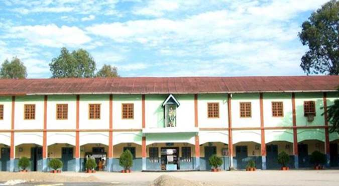
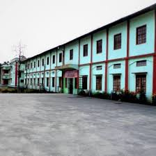

St. Mary's High School, North Lakhimpur is a Catholic school affiliated to the Secondary Education Board of Assam. The school has classes from KG to X. It was established on 8 March 1966 by the Missionary Sisters of Mary Help of Christians (MSMHC). The motto of the school is to educate person with character and competence to build a civilization of love.
Address: Chowkham, Assam 787051
Phone: 03752 243 282
Founded: 1966
 